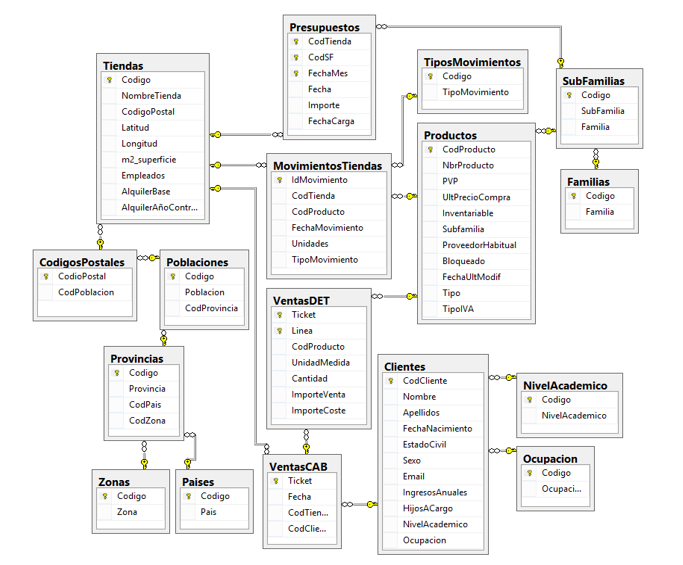
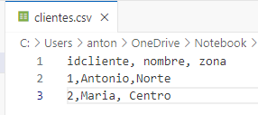

Modelado Dimensional¶
Cuando se está trabajando en proyectos de analítica de datos al uso, lo más habitual es que nuestra capa de servicio o capa gold, aquella destina a servir ya finalmente a los usuarios que necesiten conectarse directamente a nuestros datos para sus análisis, o los modelos semánticos de Power BI, es muy habitual que se sigue un modelo en estrella para
1. ¿Por qué es importante el Modelado Dimensional?¶
Imagina un supermercado donde múltiples procesos ocurren simultáneamente:
- Cajeros registrando compras.
- Administradores ingresando facturas.
- Gerentes consultando ventas en tiempo real.
Dado que muchas personas leen y escriben información al mismo tiempo, la base de datos debe estar diseñada para soportar este acceso concurrente de manera eficiente.
🔹Diferencias entre OLTP y OLAP¶
Bases de datos transaccionales (OLTP)¶
Las bases de datos operacionales (OLTP) están diseñadas para manejar transacciones rápidas y frecuentes, como ventas, registros de clientes y actualizaciones de inventario. Se caracterizan por: ✅ Alta concurrencia (muchos usuarios escribiendo datos). ✅ Estructura altamente normalizada para evitar redundancia. ✅ Optimización para inserciones y actualizaciones rápidas.

Modelado Dimensional para análisis (OLAP)¶
El Modelado Dimensional se centra en la optimización para el análisis de datos, consolidando información en estructuras de fácil acceso. Sus características son: ✅ Desnormalización para mejorar la velocidad de consulta. ✅ Optimización para reportes y análisis históricos. ✅ Uso de tablas de hechos y dimensiones.
2. Pasos para construir un modelo dimensional¶
1️⃣ Identificar el proceso de negocio a analizar
📌 Ejemplo: Análisis de ventas en un supermercado.
2️⃣ Determinar la granularidad de los datos
📌 Nivel de detalle con el que se almacenan los datos (ejemplo: ventas por día, por tienda, por producto).
3️⃣ Definir dimensiones y atributos
📌 Crear tablas de dimensiones como Tiempo, Producto, Cliente, Ubicación.
4️⃣ Construir la tabla de hechos
📌 Contiene las métricas clave (Ej: cantidad de ventas, ingresos totales).
3.Principales enfoques de Modelado Dimensional¶
🔹 Enfoque de Inmon (Top-Down)¶
- Se construye un Data Warehouse corporativo antes de crear Data Marts.
- Priorizado en integridad y calidad de datos.
- Adecuado para grandes empresas con múltiples áreas de negocio.
- Arquitectura centralizada que luego se desglosa en Data Marts.

🔹 Enfoque de Kimball (Bottom-Up)¶
- Se crean Data Marts específicos para procesos clave del negocio.
- Cada Data Mart está optimizado para reportes y análisis rápidos.
- Se integran gradualmente en una estructura de Data Warehouse.

🔹 Modelo Híbrido¶
- Combina la velocidad del enfoque Kimball con la integración del Inmon.
- Permite una implementación ágil con una estrategia de consolidación a largo plazo.
4.Elementos clave del Modelado Dimensional¶
🔹 Tablas de Hechos¶
Contienen métricas o hechos que representan eventos o transacciones. Características:
- Altas y estrechas (muchos registros, pocas columnas).
- Clave primaria compuesta por claves foráneas de las dimensiones.
- Ejemplo: Tabla de Ventas con columnas de cantidad, precio total, ID del producto, fecha.
🔹 Tablas de Dimensión¶
Representan entidades descriptivas como clientes, productos o fechas. Características:
- Anchas y cortas (menos registros, muchas columnas descriptivas).
- Desnormalizadas para mejorar el rendimiento.
- Contienen jerarquías (Ej: Año → Mes → Día).
Ejemplo: Dimensión Producto
| ID_Producto | Nombre | Categoría | Marca |
|---|---|---|---|
| 101 | Laptop | Electrónica | Dell |
| 102 | Teléfono | Móviles | Samsung |
5.Modelos de esquemas dimensionales¶
🔹 Esquema en Estrella¶
- Cada dimensión se almacena en una única tabla.
- La tabla de hechos se relaciona directamente con cada dimensión.
- Ventajas: Rápido para consultas, fácil de entender y usar.

🔹 Esquema en Copo de Nieve¶
- Las dimensiones están normalizadas en múltiples tablas.
- Ventajas: Reducción de redundancia, pero con mayor complejidad de consultas.

6.Patrón SCD (Slowly Changing Dimension)¶
Como hemos comentado anteriormente, la información de los sistemas transaccionales puede ser modificada, aunque éstos sólo guardan la última versión. Por el contrario en un Data Warehouse, debemos reflejar ese historial de cambios para mostrar la verdad que había en el momento en que se produjeron los hechos.
🔹 Seguimientos de Cambios en las dimensiones¶
Veamos un ejemplo. Si en nuestro sistema transaccional asociamos cada venta al comercial que la realiza, y éste a su vez depende de un director de zona. En la tabla de ventas queda reflejado el comercial que realiza la venta, y en la tabla del empleado se almacena el director de zona del que depende, ya que tenemos los datos normalizados. ¿Qué ocurre si un comercial, por cualquier motivo, bien personal o bien laboral, le cambian la zona asignada?, ¿Y si además la nueva zona depende de otro director de zona?, ¿Y qué ocurre si sacamos un informe de ventas de ese nuevo director de zona? Pues que se le han trasladado a él todas las ventas que ha hecho este comercial durante toda su vida laboral en la empresa. Esto no es real, e imaginamos que su antiguo jefe de zona no estará en absoluto de acuerdo con estos informes de ventas, además de que no son ciertos. Cuando diseñamos un Data Warehouse debemos evitar esta problemática que tenemos en muchos sistemas transaccionales, donde sólo tenemos la versión actual de los datos. Para ello hay una serie de técnicas que nos permiten ir detectando los cambios que ocurren en el transaccional y dejándolos reflejados. Volviendo con el ejemplo anterior, en la tabla de dimensiones se deberían tener dos filas (o versiones) del empleado, una en la que se indica cuál es su jefe de zona antiguo, y durante qué periodo ha sido su jefe de zona, y otra que indica cuál es su jefe actual y desde cuándo. Adicionalmente, cada una de las ventas debe estar apuntando a la versión correcta del comercial, es decir, las ventas deben apuntar a la versión del comercial correspondiente al momento en que se produjeron, quedando así reflejado el jefe de zona y la zona que realmente tenía asignados en el momento de cada venta.
Por el contrario, hay otros casos en los que no necesito reflejar el historial, por ejemplo, si corrijo el nombre de dicho comercial porque lo tenía mal escrito, no quiero tener dos versiones de él, una con el nombre mal escrito y otra con él bien escrito, sino que quiero que se sobrescriba y siempre aparezca la versión actual que es donde está escrito correctamente.
🔹 Tipos de SCD¶
Vistos estos ejemplos, pasemos a describir los diferentes tipos de SCD más habituales. Existe otros muchos, porque la combinatoria de lo que necesitemos hacer puede ser variada, pero para simplificar, los dos más habituales y básicos son :
-
SCD tipo 1, Sobrescritura: la nueva información sobrescribe a la antigua, no se guardan históricos y sólo se tiene la versión actual. Dicha sobre escritura se produce cuando se detecta algún error en los valores para corregirlo y mejorar la calidad del dato. Desde el punto de vista analítico sólo interesa la versión actual.
-
SCD tipo 2, historial de cambios: refleja toda la información histórica. Por cada cambio que se produzca, se crea una nueva fila en la tabla de dimensiones con la fecha de inicio y una nueva clave subrogada, y se marca la fecha de fin de la versión anterior. Cada hecho que entra, debe comprobar a qué versión de la fila en la tabla de dimensiones se debe asociar (qué clave subrogada debe almacenar) en función de la fecha en la que se produzca.
Para dar soporte a este tipo de seguimiento de cambios para las SCD2 , existen varias maneras, pero la más habitual, utiliza fechas de inicio y fin que indican la validez, por lo que la estructura de nuestras dimensiones quedaría compuesta por :
- Clave subrogada: Es la clave principal de la tabla de dimensiones. Nos permite identificar de forma única cada fila, suele ser un entero auto- incremental. Es totalmente transparente al usuario de negocio, no la usará en ningún momento, ni tan siquiera tendrá conocimiento de su existencia.
- Clave de negocio: Es la clave con la que trabaja habitualmente el usuario, pero no puede ser la clave principal porque se pueden producir duplicidades.
- Atributos de la dimensión: serán cada una de las características que necesitemos almacenar. Lo habitual es que haya varias decenas de ellos, incluso que en algunos casos superen el centenar. -
- Fecha de Inicio y Fecha de Fin: Servirán para conocer el periodo de vigencia de cada una de las versiones de los atributos.
🔹 Hands On: Implementando SCD2¶
Para este ejemplo utilizaremos dos ficheros .csv muy simples, que puedes crearte directamente, y que por agilidad, y para ver alguna opción adicional, alojaremos en SharePoint o Onedrive para así poder modificarlos fácilmente y ver el funcionamiento de este seguimiento de cambios. Adicionalmente a eso, vamos a implementar una arquitectura más compleja, donde crearemos un lakehouse con esos cargados, para posteriormente simular un esquema en estrella en un datawarehouse. Los fichero serían:


Puedes acceder a los archivos desde esta ruta si no quieres crearlos CursoFabric y así puedes copiarlos directamente en tu Onedrive.
Una vez tenemos los ficheros creamos: - Un lakehouse que llamaremos lakescd2 y un datawarehouse que llamaremos dwscd2 - Crearemos un Dataflow Gen2, con el que leeremos ambos ficheros y simplemente los copiaremos (convirtiendo los tipos de datos) al lakehouse, como tablas. - En el Dataflow, utilizaremos un origen de Texto/CSV y navegaremos a la carpeta de Onedrive donde los hayamos generado, y creamos las dos consultas, para clientes y para ventas. - Seleccionamos como destino de ambos, el lakehouse lakescd2 - Como siguiente paso, vamos a nuestro dwscd2 y creamos el esquema necesario:
CREATE SCHEMA [dim]
GO
CREATE SCHEMA [fact]
GO
CREATE TABLE [dim].[clientes]
(clientesk int,
idcliente int,
nombre varchar(500),
zona varchar(100),
fechainicio DATE,
fechafin DATE)
GO
CREATE TABLE [fact].[ventas]
(idventa int,
icliente int,
catagoria varchar(500),
importe FLOAT)
- Una vez tenemos el esquema generado, ahora podemos cargar los datos desde el lakehouse, al datawarehouse

Para el resto del laboratorio, seguiremos el patrón que está documentado en este ejemplo: https://learn.microsoft.com/en-us/fabric/data-factory/slowly-changing-dimension-type-two
7.Importancia del Modelado Dimensional¶
✅ Simplifica el acceso y análisis de datos.
✅ Optimiza el rendimiento de consultas y reportes.
✅ Facilita la integración con herramientas de BI.
✅ Permite la reutilización de estructuras de datos.
✅ Asegura que los datos soporten las necesidades del negocio.